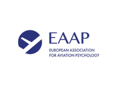
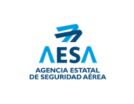
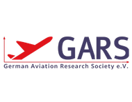
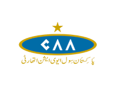
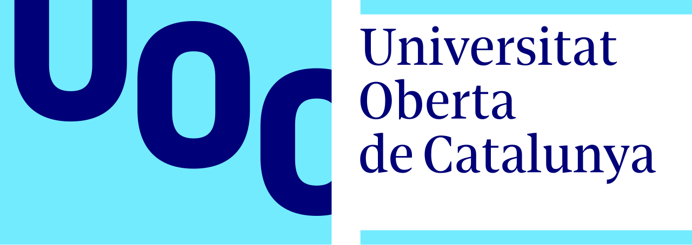

Consultor de Gesti�n Aeron�utica | Especialista en Factores Humanos (EAAP) | Auditor L�der ISO | Finalista de Doctorado (UOC, Espa�a)
Nuestros programas especializados de formaci�n en Factores Humanos (HF) y Sistemas de Gesti�n de Seguridad (SMS) son dise�ados, actualizados e impartidos personalmente por Amanullah Qureshi, quien aporta una autoridad triple y �nica al cumplimiento aeron�utico europeo.
Maestr�a T�cnica: D�cadas de experiencia en gesti�n de ingenier�a de mantenimiento de aeronaves e instrucci�n en el centro de formaci�n de Pakistan International Airlines (PIA).
Autoridad Acad�mica: Finalista de Doctorado en Gesti�n Empresarial en la Universitat Oberta de Catalunya (UOC, Espa�a), especializado en estrategia organizacional y rendimiento.
Credenciales de Cumplimiento: Auditor L�der ISO certificado y miembro profesional activo tanto de la Asociaci�n Europea de Psicolog�a Aeron�utica (EAAP) como de la Sociedad Alemana de Investigaci�n Aeron�utica (GARS).
Dise�amos e impartimos cursos adaptados estrictamente a los est�ndares EASA Part-145.A.30(e) y Part-66 M�dulo 9 [145.A.30(e)]. Ofrecemos modelos de formaci�n flexibles que incluyen e-learning autoguiado en l�nea y clases magistrales interactivas en vivo. Nuestros programas se centran en minimizar el error humano, establecer una "Cultura Justa" saludable, y est�n completamente mapeados a una Matriz de Cumplimiento EASA para aprobaci�n inmediata por parte del Gerente de Calidad de su empresa.
Formación recurrente sobre responsabilidades de mantenimiento, acuerdos contratados y cumplimiento Part 145. Para personal certificador, técnicos, QA y gerencia.
Inscribirse¿Preparado para los exámenes EASA Part 66? 52 preguntas tipo test (B1-1, B1-3, B2), 65 minutos cronometrados. Gane confianza y asegúrese de estar listo para el examen oficial. 3 intentos por módulo. Calificación instantánea. Debe realizarse en una organización EASA 147 aprobada bajo condiciones de examen.
Probar HerramientaClases magistrales interactivas en vivo impartidas directamente por Amanullah Qureshi. Enfocadas en minimizar el error humano y establecer una "Cultura Justa" saludable en su organización.
Solicitar Seminario